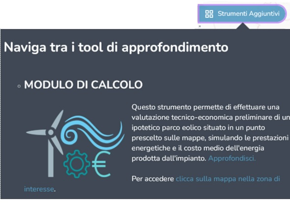
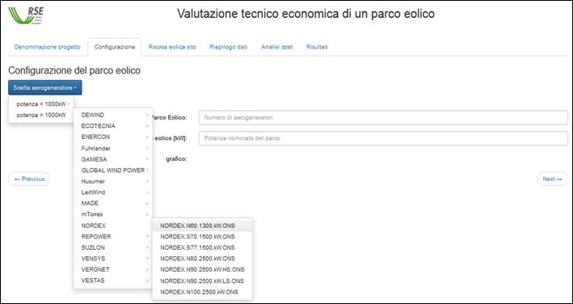
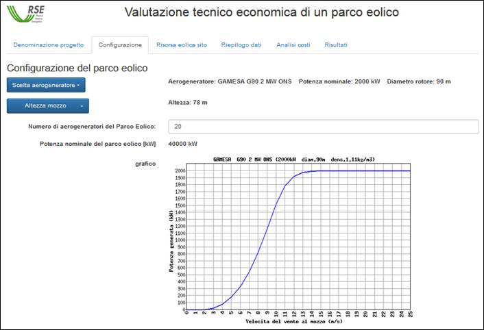
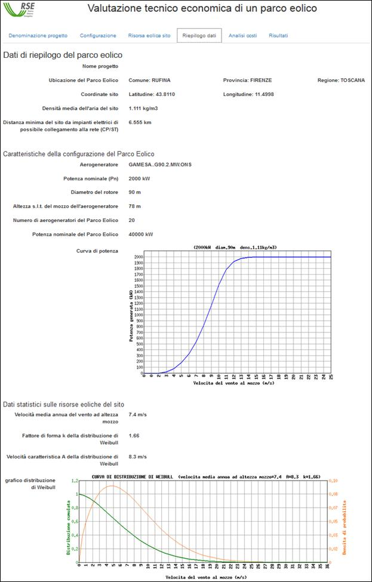
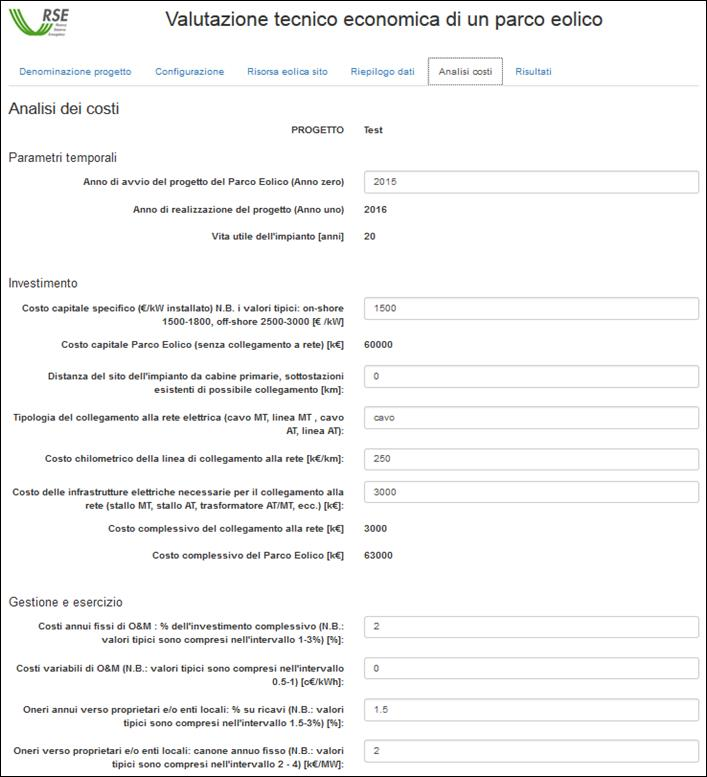
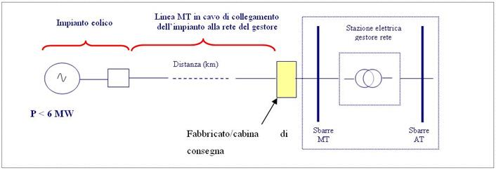
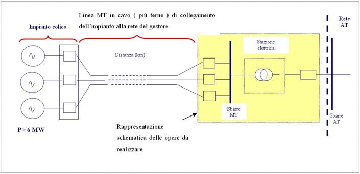
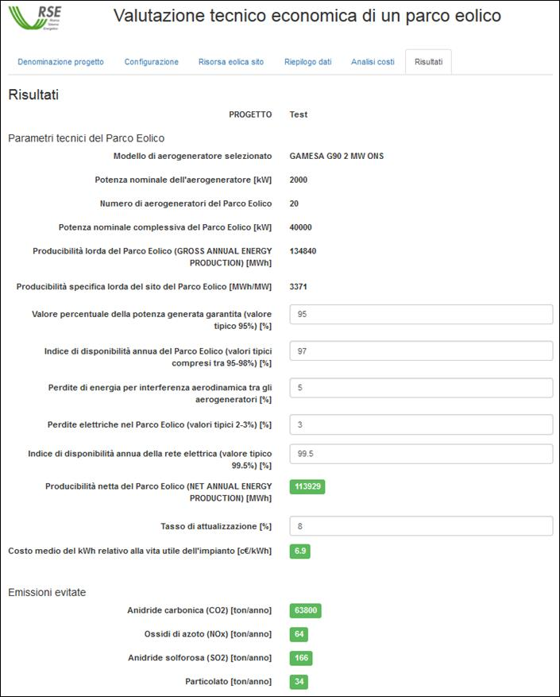

Manuale per l’utilizzo del modulo per la valutazione tecnico - economica di un parco eolico
Il modulo per la valutazione tecnico-economica permette di valutare, in via preliminare, le prestazioni energetiche e il costo medio dell'energia di un'ipotetica centrale eolica in un punto prescelto sulle mappe mediante il puntamento del mouse.
L'accesso al modulo di valutazione tecnico-economica avviene attraverso la funzionalità "Strumenti Aggiuntivi". Dopo aver premuto il pulsante "clicca sulla mappa" verrà visualizzata una griglia in cui è discretizzato il territorio. Occorre aumentare la scala di visualizzazione (zoom-in) e cliccare sulla mappa per indicare la posizione del sito di realizzazione dell'ipotesi di parco eolico. Si aprirà quindi una nuova finestra.

Dopo aver premuto il pulsante "Calcolo prestazioni" occorre cliccare sulla mappa per indicare la posizione del sito di realizzazione dell'ipotesi di parco eolico. Si aprirà quindi una nuova finestra.

Il modulo di calcolo delle prestazioni è suddiviso in sei pannelli.
Sul primo pannello, che consente all'utente di inserire un nome per il progetto, vengono mostrati i dati/le informazioni relativi alla localizzazione del sito selezionato dall'Utente. In particolare sono riportate le coordinate geografiche (latitudine e longitudine WGS84) del punto cliccato ed il Comune, la Provincia e la Regione di appartenenza. Dalla mappa di orografia viene automaticamente trasferito il dato di altitudine sul livello del mare (o di profondità del fondale se il punto viene scelto off-shore). Corrispondentemente viene calcolata la densità dell'aria per tale altitudine; se il punto scelto è situato in mare la densità dell'aria viene calcolata al livello del mare, ovvero l'altezza impiegata per il calcolo della densità viene assunta pari a zero. L'ultimo dato presentato sul primo pannello è la distanza minima del punto scelto per la realizzazione dell'ipotetico impianto eolico da infrastrutture elettriche (cabine primarie, sottostazioni) di possibile collegamento per la cessione della produzione alla rete elettrica.
Nel secondo pannello l'Utente effettua la scelta del modello di aerogeneratore da considerare come unità di generazione del parco eolico e definisce la taglia di quest'ultimo. Con il pulsante blu posto sulla sinistra è possibile selezionare l'aerogeneratore.

La lista degli aerogeneratori viene compilata mediante un'interrogazione del database; le macchine elencate sono classificate in due gruppi in base alla taglia (minore e maggiore di 1000 kW) e per costruttore.
Selezionando un elemento dalla lista viene riportato a destra del pulsante blu il modello di aerogeneratore scelto, la sua potenza nominale ed il diametro del rotore. Nella parte inferiore del pannello viene inoltre mostrata la curva di potenza della macchina scelta corretta (secondo la norma CEI EN 61400-12) considerando il valore della densità media dell'aria del sito.

Successivamente è possibile selezionare l'altezza del mozzo tra quelle consentite per la macchina prescelta. L'utente deve inoltre inserire il numero complessivo di macchine che compongono il parco eolico. Automaticamente viene calcolata la potenza nominale del parco moltiplicando il valore di potenza nominale dell'aerogeneratore prescelto per il numero di macchine inserito.
Il terzo pannello riporta i dati relativi alla risorsa eolica restituiti dalle mappe di vento integrate nell'atlante e relative alle seguenti quattro quote s.l.t./s.l.m.: 50, 75, 100, 125 e 150 metri. Per valutare la producibilità di un sito occorre però anche conoscere la distribuzione statistica dell'intensità del vento in quanto la potenza prodotta da un aerogeneratore è una funzione non lineare della velocità del vento. In ambito anemologico la distribuzione utilizzata per descrivere la statistica dell'intensità del vento è la distribuzione di Weibull a due parametri, la cui funzione di densità di probabilità è definita dalla seguente relazione:
 A>0, k>0
A>0, k>0
Dove v è la velocità del vento, A il parametro di scala (detto anche velocità caratteristica) e k il parametro di forma.
Dalle mappe della velocità media annua (alle quote di 50, 75, 100, 125 e 150 m s.l.t.) viene interpolata la velocità media annua all'altezza del mozzo del modello di aerogeneratore prescelto. Il valore viene riportato nel primo textbox del pannello. Sempre dall'atlante viene attinta l'informazione del parametro di forma k che viene riportato nella casella sotto la velocità media.

La velocità caratteristica A della distribuzione di Weibull, funzione della velocità media e di k, viene calcolata automaticamente e riportata nel pannello. La formula utilizzata per il calcolo di A è la seguente:

Ove
 è la velocità media annuale
interpolata all'altezza del mozzo e
è la velocità media annuale
interpolata all'altezza del mozzo e  indica la funzione Gamma di
Eulero.
indica la funzione Gamma di
Eulero.
Il grafico riportato nella parte inferiore del pannello mostra l'andamento della distribuzione di Weibull e della sua cumulata corrispondenti ai valori di A e k indicati.
Si evidenzia che sia la velocità media all'altezza del mozzo che il fattore di forma k possono essere modificati dall'utente. Corrispondentemente la velocità caratteristica A ed il grafico vengono aggiornati automaticamente. Tale possibilità di variazione dei dati può tornare utile quando si dispone di informazioni della risorsa eolica del sito correlate all'esecuzione di una campagna di monitoraggio nel sito stesso, oppure quando si desidera condurre valutazioni per particolari forme della distribuzione (ad esempio distribuzione di Rayleigh caratterizzata da fattore k=2).
Il quarto pannello contiene un riepilogo dei dati scelti e/o introdotti ai fini della valutazione. In particolare, dall'alto verso il basso, sono riportati i dati relativi all'ubicazione dell'ipotesi di parco, le caratteristiche ed il numero degli aerogeneratori che lo compongono. Seguono poi il grafico della curva di potenza dell'aerogeneratore scelto, i dati relativi alle caratteristiche statistiche della risorsa eolica ed il grafico della curva di distribuzione che descrive la variabilità della risorsa eolica nel sito.

Il quinto pannello contiene i dati relativi all'analisi dei costi, suddivisi in costi di investimento e di gestione del parco eolico.

In questo pannello l'utente può inserire i parametri economici necessari, unitamente ai parametri di natura tecnica, per ottenere i risultati finali presentati nel pannello successivo, ultimo del modulo di calcolo, consistenti essenzialmente: nella produzione attesa per il parco eolico, nel costo medio del kWh prodotto valutato sull'intera vita utile dell'impianto (20 anni) e nei valori delle emissioni di gas serra evitate in conseguenza dell'eventuale realizzazione dell'impianto.
I dati che possono essere personalizzati dall'Utente sono i seguenti:
Ad ausilio dell'Utente si riportano qui alcune indicazioni riguardanti i valori orientativi dei costi da utilizzare nella valutazione in caso di mancanza di dati specifici per l'ipotesi di impianto da esaminare.
Costo specifico dell'impianto eolico
E' da osservare che il valore inferiore è appropriato per installazioni di numerosi aerogeneratori in siti ubicati in aree facilmente accessibili e non particolarmente complesse dal punto di vista orografico; il valore superiore, invece, risulta maggiormente rappresentativo nel caso di siti montani, o comunque più problematici, sotto tutti gli aspetti, per quanto attiene sia all'installazione degli aerogeneratori che ai collegamenti interni all'impianto stesso.
I valori indicati non sono comprensivi dei costi del collegamento dell'impianto alla rete.
Questi valori rappresentano un'indicazione di larga massima dei costi specifici di aerogeneratori di impianti offshore realizzati in aree marine caratterizzate da fondali non eccessivamente profondi (profondità inferiore a 30 m) e da distanze dalla costa comprese nell'intervallo 5-20 km.
I valori indicati non sono comprensivi dei costi del collegamento dell'impianto alla rete.
Costo chilometrico linea di collegamento di impianti eolici onshore alla rete elettrica
L'intervallo di valori indicato è da correlare al valore della potenza elettrica dell'impianto eolico e, quindi, al numero di terne di cavi necessarie per il trasporto della potenza al punto di consegna. Il valore superiore, sempre come stima di larga massima, può essere ritenuto rappresentativo del trasporto di potenze elettriche dell'ordine di qualche decina di MW realizzato con due/tre terne di cavi di adeguate caratteristiche.
Mediamente si tende a suddividere un impianto eolico in sottocampi di pari potenza per avere una maggiore flessibilità e affidabilità nella gestione dell'impianto. La potenza dei singoli sottocampi è di norma compresa fra 5-10MW, in relazione alla orografia del terreno e alla distanza dal punto di consegna dell'energia prodotta.
Ogni sottocampo viene collegato al punto di consegna mediante una terna di cavi.
Il costo stimato per terna è:
- per ogni sottocampo di potenza 5-8MW (tensione 20kV) con distanza massima di circa 10km dal punto di consegna: costo 90 - 100k€/km (per singola terna in cavidotto);
- per ogni sottocampo di potenza 8-10MW (tensione 30kV) con distanza massima di circa 20km dal punto di consegna: costo 100 - 120k€/km (per singola terna in cavidotto);
I suddetti costi si riducono di circa il 20% per sottocampo, nel caso di più terne disposte all'interno dello stesso cavidotto.
Analogamente alla voce precedente, il valore superiore è rappresentativo del trasporto di potenze elettriche dell'ordine di qualche decina di MW.
I valori si riferiscono al trasporto di potenza tra la decina e il centinaio di MW
I valori si riferiscono al trasporto di potenza tra la decina e il centinaio di MW
Costo chilometrico linea di collegamento di impianti eolici offshore alla rete elettrica
Per questa tipologia di impianti non sono disponibili informazioni/dati che consentano di poter indicare un intervallo di valori che possa comprendere al suo interno il costo di una delle possibili soluzioni tecnicamente realizzabili per la consegna alla rete della produzione.
Al fine di consentire anche per questi impianti la valutazione di carattere economico implementata nel modulo di calcolo, si riporta nel seguito la relazione impiegata per fornire una stima di larga massima del costo chilometrico, inclusivo del costo delle infrastrutture per la connessione alla rete, del collegamento di impianti offshore di potenza consistente. Tale stima di costo può essere ottenuta attraverso la seguente relazione:
Ckm = A + B * P
in cui il valore da attribuire alle grandezze che in essa appaiono sono i seguenti:
A : valore da scegliere nell'intervallo 0,1- 0,25 M€/km ( posa del cavo su fondo marino "seabed laying" ) ; 0,25- 0,5 M€/km ( posa del cavo in trincea "jetting" o cavo protetto da copertura) ;
B : valore da scegliere all'interno dell'intervallo 1,2 - 1,8 k€/(MVA*km)
P : è la potenza da trasferire espressa in MVA.
E' da rimarcare che la formula sopra indicata tiene conto di tutto: del costo del cavo sottomarino, della posa e di eventuali infrastrutture elettriche da realizzare in mare e/o su costa; quindi nel caso offshore occorre inserire il valore zero in corrispondenza della cella prevista per indicare il "costo delle infrastrutture elettriche necessarie per il collegamento alla rete".
Costo infrastrutture MT e AT ( cabina AT/MT, stalli MT e AT, ecc.) nel punto di consegna per impianti onshore
E' da premettere che per poter fornire un ordine di grandezza per quanto possibile adeguato per tale voce di costo, occorrerebbe conoscere a priori la soluzione tecnica da realizzare ai fini del collegamento dell'impianto alla rete (allacciamento: in derivazione a una linea esistente, in entra e esci a una linea esistente, in antenna a una sottostazione AT/MT esistente o appositamente realizzata, ecc.)
Per quanto riguarda l'Italia, la connessione alla rete di impianti di produzione è attualmente regolata dalle Delibere ARG/elt 125/10 e 99/08 emesse dall'Autorità per l'energia elettrica e il gas. Inoltre, i gestori delle reti elettriche e, in particolare la società TERNA S.p.A. che gestisce la rete AT di trasmissione nazionale, hanno dei propri codici di rete in cui sono precisati i requisiti che gli impianti di generazione devono possedere per la loro connessione. E' abbastanza arduo, se non impossibile, riassumere qui in poche parole l'intera materia. In riferimento ad impianti di generazione eolici, vale la pena comunque ricordare le diverse procedure di connessione alla rete e i diversi requisiti richiesti agli impianti di potenza nominale inferiore o superiore/uguale a 10 MW. Per quanto riguarda la tensione della rete di connessione, attualmente in Italia è consentito l'allacciamento a reti in MT ad impianti caratterizzati da potenza nominale non superiore a 6 MW. Per quelli di potenza più elevata la connessione è prevista unicamente alle sbarre in AT, a meno che particolari motivi facciano propendere per soluzioni alternative. E' infine anche da rimarcare che, in Italia, può accadere che ai proprietari di parchi eolici venga richiesto, dal gestore delle rete a cui l'impianto è da connettere, di sostenere una parte dei costi per aggiornamenti che il gestore deve sostenere sulle infrastrutture elettriche ubicate a valle del punto di connessione per poter recepire la potenza del nuovo impianto. PoichÉ questi costi sono difficili da quantificare prima dell'avvenuta connessione e possono cambiare considerevolmente da un caso all'altro, essi non sono stati qui considerati. Tuttavia si ritiene opportuno evidenziare all'Utente che tali costi addizionali potrebbero essere non trascurabili.
Due tipici casi di connessione di parchi eolici (di potenza rispettivamente inferiore e superiore a 6 MW) sono riportati nel seguito come esempi, con l'ausilio di disegni che riguardano gli schemi di allacciamento in rete più ricorrenti in Italia. Altre possibilità di allacciamento potrebbero, tuttavia, essere prese in considerazione ad esempio per un impianto di potenza superiore a 6 MW. Quest'ultimo, infatti, in assenza di vincoli ambientali imposti dalle locali Autorità, potrebbe anche essere direttamente connesso alla rete tramite una linea aerea AT, invece che attraverso linee MT in cavo interrato .

Per impianti di potenza inferiore a 6 MW (in qualche raro caso anche di potenza superiore) è possibile trasferire la potenza erogata sulla rete/sbarre MT, aggiungendo, rispetto ai precedenti costi del cavidotto, il costo di una fabbricato/cabina di consegna (in giallo nella figura) comprendente, oltre ai locali quadri ed eventualmente al locale controllo dell'impianto eolico, anche il locale di consegna dell'energia della società proprietaria (gestore) della linea MT. Il costo di tale opera si può stimare dell'ordine di 90 -120k€.

Per impianti di potenza maggiore a 6MW occorre in generale realizzare una stazione elettrica con elevazione di tensione a 132 o 150kV (in giallo nella figura); il cui costo dipende dalla potenza dell'impianto eolico e dalla tipologia di realizzazione della stazione elettrica richiesta dal proprietario/gestore della rete AT (collegamento rigido, entra/esci, ecc.); in ogni modo il valore complessivo del costo della stazione elettrica si può considerare compreso nell'intervallo 1200 - 2400k€ .
I costi indicati per gli impianti sono puramente indicativi e sono forniti per mettere l'Utente non esperto nelle condizioni di condurre attraverso il modulo di calcolo una prima valutazione economica di carattere orientativo da far seguire, in un secondo momento, da una valutazione con dati economici attendibili derivanti da analisi e approfondimenti della particolare ipotesi di realizzazione.
Va anche rimarcato che le indicazioni di costo riportate sono rappresentative di una parte limitata della casistica che può presentarsi in relazione alla realizzazione delle opere elettriche indicate.
I costi effettivi di queste ultime possono subire scostamenti significativi dai valori indicati a seconda del contesto ambientale/territoriale in cui si è chiamati ad operare.
Ad esempio, per la realizzazione delle linee elettriche, le caratteristiche del territorio (l'orografia, la natura del terreno, il valore ambientale pregiato del terreno interessato dalle opere, ecc.) possono comportare variazioni rilevanti dei costi, che possono influire in maniera spinta sui costi complessivi delle opere.
E' inoltre da ricordare che i valori di default inseriti sono relativi al 2007 e, sebbene non si rilevino in letteratura in generale grandi variazioni, sarebbe opportuno eseguire uno studio per l'aggiornamento di tali costi
E' da osservare che i costi di Operation&Maintenance sono considerati nelle due forme sopra indicate (fissi e variabili), che il modulo poi sommerà; i valori di default propongono la rappresentazione con soli costi annui fissi, ma l'Utente può variare la scelta in base a una propria rappresentazione, anche con una combinazione delle due.
Riguardo agli oneri annui (accordi con enti locali, proprietari, ecc.) è da rimarcare che tali oneri sono molto variabili e dipendono dalle condizioni locali di mercato. I valori di default sono del tutto approssimativi e non intendono assolutamente rappresentare condizioni medie di mercato.
E' da rimarcare inoltre che ai fini della valutazione del costo medio del kWh prodotto si assume che la vita utile dell'impianto sia pari a 20 anni, come evidenziato nell'apposita cella.
L'ultimo pannello riporta i risultati della valutazione.

L'Utente può personalizzare i valori dei seguenti parametri tecnici di funzionamento del parco eolico:
Nella finestra i risultati della valutazione sono evidenziati nelle celle contraddistinte da colorazione verde e riguardano le seguenti grandezze:
a) producibilità netta del parco eolico (NET ANNUAL ENERGY PRODUCTION) : stima del valore della produzione media annua di energia elettrica del parco eolico al netto di tutte le perdite,
b) costo medio del kWh relativo alla vita utile dell'impianto: stima del costo del kWh_prodotto dal parco eolico valutato considerando come periodo produttivo dell'impianto un arco temporale pari alla vita utile,
c) emissioni evitate: stima di massima delle emissioni di gas serra (CO2, NOX e SO2) e di particolato che sarebbero evitate su base annua con la produzione del parco eolico.
Il dato di cui al punto a) discende dal dato producibilità lorda del parco eolico (GROSS ANNUAL ENERGY PRODUCTION) quest'ultimo ottenuto attraverso il calcolo della producibilità specifica lorda del sito del parco eolico evidenziato nella finestra e, in particolare, dal prodotto di questo dato con quello di potenza nominale complessiva del parco eolico.
Riguardo alla producibilità specifica lorda è da osservare che tale dato rappresenta il numero di ore equivalenti annue di funzionamento dell'impianto al valore di potenza nominale ed è desunto in base alla curva di potenza del sito dell'aerogeneratore selezionato dall'Utente e alla risorsa eolica del sito descritta dalla curva di distribuzione di Weibull definita dai suoi parametri caratteristici A (velocità caratteristica o fattore di scala) e k (fattore di forma).